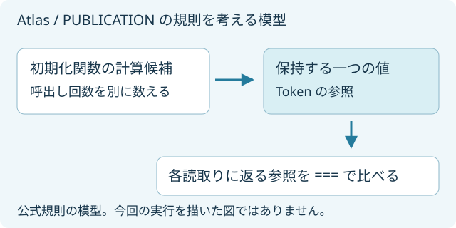

ATLAS / KOTLIN / 23
計算が一度とは限らない。
返る値は、同じ参照？
lazy は初期化した値を保持します。三つの mode を逐次の読取りで比べ、二つの worker が読む条件へ進みます。初期化関数を呼んだ回数と、読取りで返った Token の同一性を分けて確かめます。
1. 条件を選び、予想する
PUBLICATION は複数回計算し得ますが、必ず複数回になるわけではありません。count と、返る参照について予想してください。
予想から始めます。この画面は Kotlin を再実行しません。
2. 時点を進め、対照を比べる
Token は id と marker を持つ変更しない値です。参照の一致は Kotlin の === で観測しました。値の一致だけから参照同一性を推測していません。
矢印は保存値を説明する模型です。JVM の内部追跡画像ではありません。事象の記録順は CPU 全体の実行順を示しません。
| 読む人 / 状態 | id / marker | 最初の結果と同じ参照 |
|---|
この時点の実行ログを見る
まだ記録を開いていません。以下は公式規則を読むための模型で、測定結果ではありません。

この模型は KR-02 の固定原典の説明です。今回の実行で複数回計算を観測した図ではありません。
| mode | 逐次 2 回の読取り | 2 worker + main |
|---|---|---|
| SYNCHRONIZED | 計算 1 回・同じ参照 | 計算 1 回・同じ参照 |
| PUBLICATION | 計算 1 回・同じ参照 | 計算 1〜2 回・同じ参照 |
| NONE | 計算 1 回・同じ参照 | 今回の実験対象外 |
3. 原典と実装へ戻る
固定版の規則では、SYNCHRONIZED は初期化を同期し、PUBLICATION は複数の計算から一つの値を公開します。NONE は同期を用意しません。今回の二者は読む前の合図を待ちます。初期化関数の中では合流待ちをしません。
4. 予想と答えを照らし合わせる
最後の時点まで進めると、許容した結果と今回の観測を比較できます。自由記述の自動採点はしません。
5. 実務で使う判断と限界
同じ値が返ることと、副作用を伴う計算が一度だけ行われることを分けて判断します。PUBLICATION で初期化関数に重複できない副作用を置く判断は、この有限な観測で得た計算回数だけでは決められません。NONE の逐次成功は並行アクセスの保証になりません。
この Mac・固定 JVM 上の 5 条件です。NONE の並行、初期化関数の例外後の再試行、再入、他 platform、性能は未検証です。記録の取得失敗は Kotlin の失敗を意味しません。専用の検証課題全体や Atlas 全分野の完了ではありません。